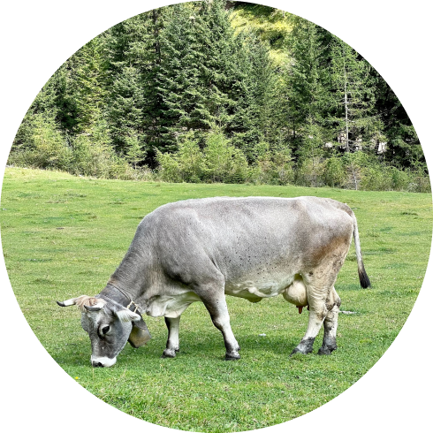

<section class="about ">
  <div class="container">
    <p class="about__label">tradition and love</p>
    <h2 class="about__heading">how it’s made?</h2>
    <div class="about-card">
      <div class="about-card__img-wrapper">
        
      </div>
      <div class="about-card__info">
        <p class="about-card__text about-card__text--first">
          Ice is a place where you will become not only a little happier, but also
          healthier. Health is the main value for us, and we follow it when
          creating our handmade desserts.
        </p>
        <p class="about-card__text about-card__text--second">
          We use traditional recipes and 100% natural ingredients. Our products
          are so natural that they can be given to children from the age of three
          years. Sweets lovers can expect 55 types of ice cream, 15 types of
          coffee and 23 milkshakes.
        </p>
        <p class="about-card__text about-card__text--third">
          This is enough to choose ice cream and coffee for any mood!
        </p>
        <button class="about-card__read-more" data-open-modal="">
          Read more
          <svg class="buy-arrow-in-button" width="12" height="12">
            <use href="../assets/sprite.svg#icon-arrow-in-button"></use>
          </svg>
        </button>
      </div>
    </div>
  </div>
</section>